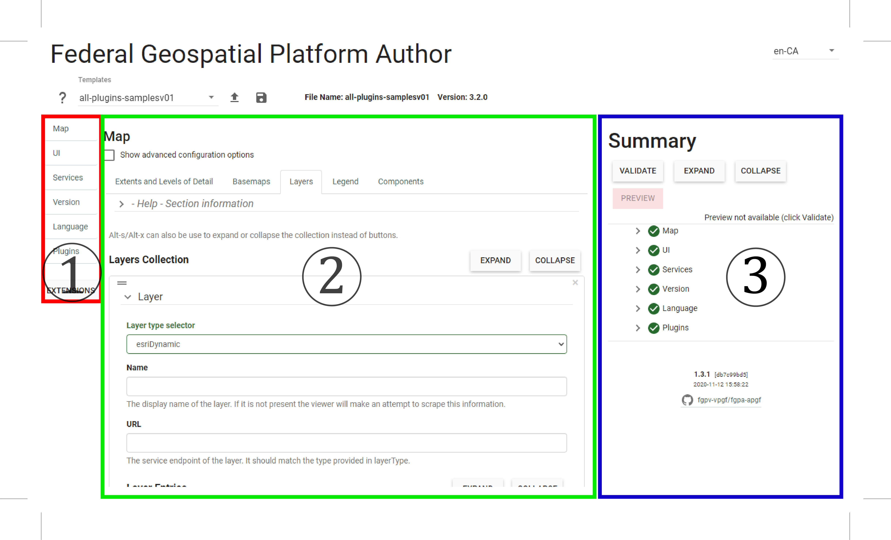

Overview
The FGP Author Tool provides an interface to test and integrate the plugins with your map service. It simply provides a user-friendly interface that allows you to configure the plugins seamlessly, easily, and without the need to manually create configuration files.
The interface can be broken up into three critical areas. (1) On your left you will find the navigation pane. This allows you to move between the different elements of the web application. (2) In the middle, you will find corresponding parameters that you will be able to configure. (3) Finally, on the right, you will find the summary pane. This allows you to validate and preview your maps. It also provides a way to indicate any errors and where those errors need to fix before you can preview your map.

Getting Started
To get started you can visit the FGP Authoring Tool Website
Your workflow can be summarized into three main steps.
Step 1. Adding a new layer
Step 2. Enabling the Plugins
Step 3. Validate, Test and Save
Adding a new layer
Step 1. From the navigation pane, select the Map option.
Step 2. Select “Layers” from the option, and click on the Add button to load the parameters to add layers to the viewer.
Step 3. Select the type of map service that you are going to load. You have several options to choose from. Identify the best option that matches the type of map service that relates to you.
Step 4. Provide a name for the that will be displayed for the layer. If it is not present the viewer will attempt to scrape this information.
Step 5. Provide the URL of the map service. This is the service endpoint of the layer. It should match the type provided in layer type.
Extra Steps Some layer types require extra inputs to be completed before it will load.
Esri Dynamic
Step 5a. Click on the Add button under Layer Entries. This will open another section where you will be able to input the “Index” of the layer. The index of the layer references the ID of the map service. Take for example this layer, (https://webservices.maps.canada.ca/arcgis/rest/services/NRCan/forest_industry_hotspots_en/MapServer/0) , the ID of this layer is 0 which corresponds to the Index.
Step 5b. Optionally, you can enter a descriptive name for the layer under the Name field. However, doing so will override the name coming from the service.
OGC WMS
Step 5a. Click on the Add button under Layer Entries. This will open another section where you will be able to input the ID of the layer entry in the WMS. This is the value between the
Step 5b. OGC WMS also includes options to include Feature info MIME type. If specified indicates that GetFeatureInfo should be enabled for this WMS and indicates the format that should be requested Legend MIM type if specified indicates that GetLegendGraphics should be enabled for this WMS and indicates the format that should be requested.
Step 6. Navigate to your left. You will find the Validate and Preview button. Pressing on the Validate button will ensure that all parameters are checked and meet requirements for reviewing.
Tip
You can add as many layers as needed
Note
If any issues are identified. It will be pointed out for your attention.
Enable Plugins
Now that you have your layers loaded and working properly.
Navigate to the Plugins tab.
There you will find all the plugins available to be used with your map. As expected, extra parameters will be required to allow you to finalize the integration of the plugins with your dataset. These can be found by following these links.
Validate and Inegrate
Finally, ensure that you validate and preview to make sure that everything works as it should.
You can save your work as a .json configuration file and also upload that file to resume or make changes as required.